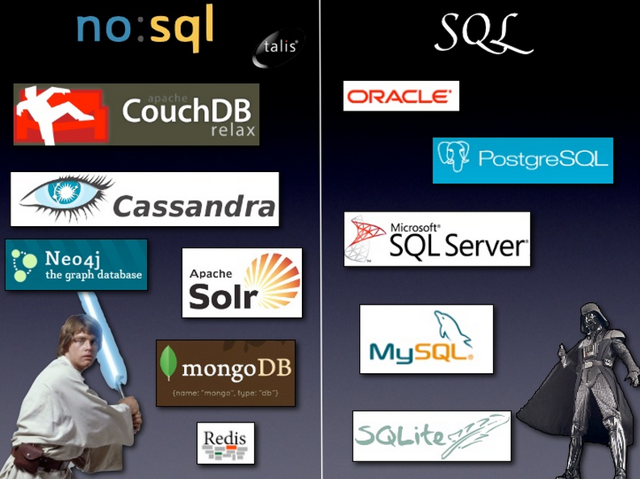

Week 8 Technical Blog
Conflict and the compass of shame
The database is the backbone of almost any business or organization. While doing business, companies accumulate massive amounts of data that they need to be able to keep organized and access in a timely matter. The database was invented to help with this challenge. SQL has dominated the database landscape for the past 30+ years. However, the last 10 years has seen NoSQL databases come on the scene and now a fierce debate exists on which one is better.
Tried and True
While the debate between the two options is typically called SQL vs NoSQL, the actual argument is regarding relational databases vs non-relational databases. SQL (Structured Query Language) is the language used to access data from a relational database like Oracle. Relational databases are made up of tables that contain information and are linked to each other by the use of foreign keys.
Pros of Relational Databases
- Well-defined standards- Since SQL has been around for so long, there is a large community support and established best practices
- The actual programming language for SQL is relatively easy to learn.
- Table based structure can handle lots of data in an organized way- depending on how your database is structured, it may be easier to get complex results back quickly
Issues with relational databases
- Extremely large and complex databases may experience performance issues (when millions of users may be doing millions of queries)
- Does not handle unstructured data search very well (i.e. google type searching)
The NoSQL movement
NoSQL stands for 'Not only SQL'. NoSQL stores data on "documents" instead of relational tables. These documents typically contain all the information about a particular object, instead of having different parts of that object on different tables that are related to each other. NoSQL gained popularity when companies like Google and Amazon decided that SQL databases didn't fit their needs and moved over to NoSQL to handle all of their data.
Pros of NoSQL
- Can efficiently handle extremely large databases
- Can handle unstructured data types- better for object-oriented programs
Issues with NoSQL
- Unstructured- This is both a strength and a weakness. The built in structure of relational databases make it easier for some companies to use it.
- Less community support and knowledge - due to NoSQL not being around as long.
And the winner is...
So who wins in the database showdown? For any boots reading this it would seem that SQL and relational databases are the way to go, at least initially. The biggest selling point for NoSQL is that it is scalable and can handle extremely large amounts of data. However, 99% of websites on the web can be handled on a single server. The Googles, Amazons, and Facebooks are extremely rare examples of websites where regular SQL couldn't fit their needs, but they aren't your typical company. In addition there is a wealth of information and support on how to use SQL that can be helpful to budding developers. Lastly, while NoSQL is gaining steam, the majority of companies still use some form of relational database for their back-end. SQL seems like the way to go until we launch our careers and come across a situation where NoSQL is needed.